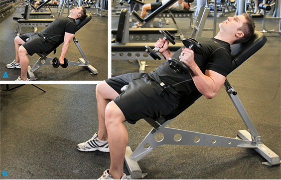
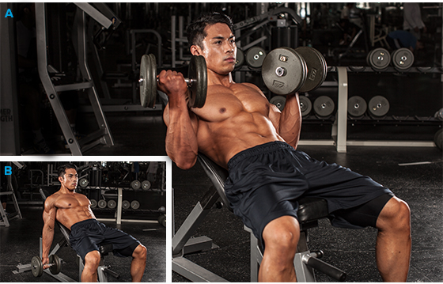
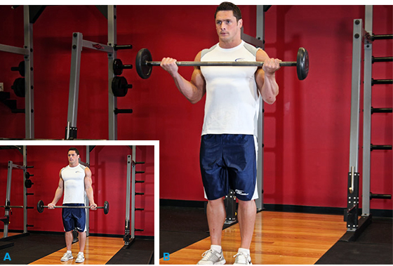

1 INCLINE HAMMER CURLSWhile you rate this No. 1, we give it mixed reviews. The incline bench position increases the stretch on the long head of the biceps, while the neutral grip increases emphasis on the brachioradialis and brachialis. But the "hammer" takes some of the tension away from the long head, negating the benefit you gain from sitting at an incline. Test this yourself by simply placing your right hand on your left biceps. Move your left hand from palm up to palm sideways and you can feel the tension change in your biceps |
 |
2 INCLINE INNER-BICEPS CURLThe biceps brachii actually consists of two portions or "heads," with differing attachment points. The "long" head actually attaches above the shoulder joint, which means that the position of the upper arm relative to the body can determine how much each head of the biceps helps during a curl. This exercise gets your humerus behind your body, stretching the long head to the max. The more horizontal the bench, the more the long head will be stretched |
 |
3 EZ BAR CURLMany find the EZ bar significantly more comfortable than a straight bar. It shifts a little bit of the load from the biceps brachii to your other elbow flexors, so an argument could be made that the EZ bar curl is the best all-around biceps builder. |
 |
4 WIDE-GRIP STANDING BARBELL CURLTaking a wider-than-normal grip will cause you to externally rotate at the shoulder, so your humerus changes its position. This prompts more involvement from the short head of the biceps. For this and all barbell curls, avoid cheating reps by leaning back. If you want to overload the top, use bands, chains, or a partner for forced reps |
 |
5 HAMMER CURLThe "hammer" or neutral wrist position will typically be our strongest curl. This is because all of our elbow flexors are actively involved; the brachialis is worked the hardest. I would recommend doing this movement like a concentration curl or on a preacher bench. This should minimize cheating and maximize recruitment. |
 |